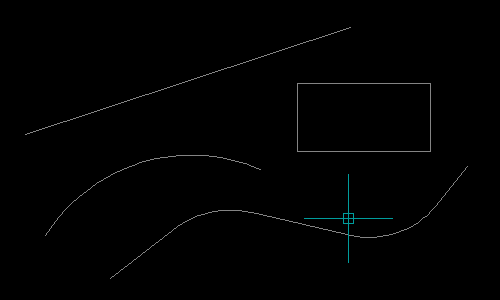

Length at Midpoint
This page is delivered for consistency purposes only, as part of the LeeMac sample module of DynALisp, which shows how DynALisp turns existing AutoLISP programs into a module. The program and its description are the work of Lee Mac, who keeps all the credit for them. The original page, with the latest version, is on Lee Mac's website: https://lee-mac.com/midlen.html
| Function Syntax | LM-LengthAtMidpoint – original syntax: midlen (see aliases) |
| Current Version | 1.1 |
| Compatible with AutoCAD for Mac? | No |
| Compatible with AutoCAD LT? | Yes |
| Original Page | lee-mac.com/midlen.html |
Program Description
This program automatically generates multiline text (MText) objects positioned over the midpoint of every object in a user selection, with each item of MText containing a field expression referencing the length of the object.
Upon issuing the command syntax midlen at the AutoCAD command-line, the program will prompt the user for a selection of objects for which to display the length. Following a valid selection, the program will proceed to generate an MText object located at the midpoint of each selected object, and containing a field expression referencing the length of the object.
The program is compatible for use with Arcs, Circles, Lines, LWPolylines, 2D & 3D Polylines, and will perform successfully with objects constructed in any UCS plane, and under all active UCS & View settings.
The program will generate MText objects positioned directly over the midpoint of each object, and aligned with the object whilst preserving text readability. The MText will have a background mask enabled and will use the active Text Style and Text Height settings at the time of running the program.
Demonstration

In the above demonstration, the FIELDDISPLAY system variable is set to 0.
Length Format
The field formatting code indicated at the top of the program source code (line 26) may be altered to display the length in a desired format:
(setq fmt "%lu6") ;; Field Formatting
To determine the correct formatting code to be used, perform the following steps:
- Type FIELD at the AutoCAD command-line and press ENTER to open the Field dialog.
- Select Objects from the 'Field Category' drop-down menu.
- Select Object from the 'Field Names' section.
- Select an object (with length) from the drawing by clicking the object selection button adjacent to the 'Object Type' box.
- Select the Length property from the 'Property' panel.
- Configure the formatting options as desired.
- Click OK and pick a point in the drawing to create a temporary MText Field.
- Download & load my Field Formatting Code program.
- Type fieldformat to run the program and select the temporary MText Field created earlier.
- Following a valid selection, the field formatting code will be printed to the command-line, e.g.:
- Copy the formatting code (including the quotation marks) to the program source code where noted:
- Save and load the modified program file.
Formatting code: "%lu4%ds44%th39"
(setq fmt "%lu4%ds44%th39") ;; Field Formatting
Bundled program notes
;;----------------------=={ Length at Midpoint }==----------------------;;
;; ;;
;; This program prompts the user for a selection of objects to be ;;
;; labelled and proceeds to generate an MText object located at ;;
;; the midpoint of each object displaying a Field Expression ;;
;; referencing the length of the object. ;;
;; ;;
;; The program is compatible for use with Arcs, Circles, Lines, ;;
;; LWPolylines, 2D & 3D Polylines, and under all UCS & View settings. ;;
;; ;;
;; The program will generate MText objects positioned directly over ;;
;; the midpoint of each object, and aligned with the object whilst ;;
;; preserving text readability. The MText will have a background mask ;;
;; enabled and will use the active Text Style and Text Height settings ;;
;; at the time of running the program. ;;
;;----------------------------------------------------------------------;;
;; Author: Lee Mac, Copyright © 2013 - www.lee-mac.com ;;
;;----------------------------------------------------------------------;;
;; Version 1.0 - 2013-11-12 ;;
;; ;;
;; - First release. ;;
;;----------------------------------------------------------------------;;
;; Version 1.1 - 2016-01-16 ;;
;; ;;
;; - Modified LM:objectid function to account for 64-bit AutoCAD 2008. ;;
;;----------------------------------------------------------------------;;
Command Names And Aliases
As in every DynALisp module, each program of this sample module has one main command, named LM-*, and the original command names of Lee Mac's page are kept as its aliases: they run the same command, and can be added, renamed or removed in Dyl-Suite (saved in Resources\Aliases.csv).
| Command | Aliases | Name |
|---|---|---|
| LM-LengthAtMidpoint | MIDLEN | Length At Midpoint |